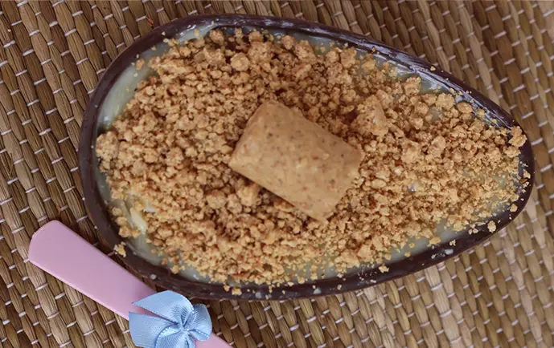
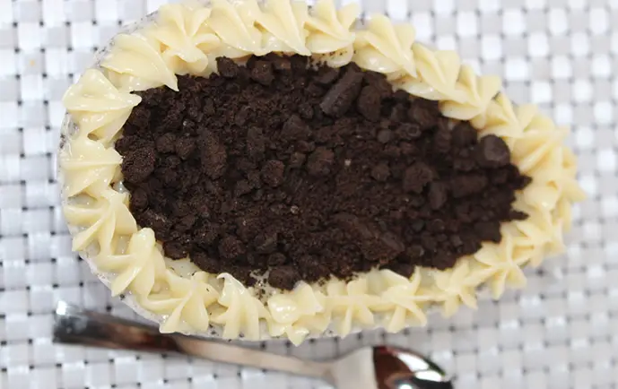

Ovos de Páscoa Gourmet
Aqui você encontrará uma variedade de ovos de Páscoa deliciosos para celebrar essa data especial.
Confira a seguir as receitas e preços!


Aqui você encontrará uma variedade de ovos de Páscoa deliciosos para celebrar essa data especial.
Confira a seguir as receitas e preços!
Primeiramente, tempere o chocolate.Então, em uma tigela misture o chocolate branco derretido e frio, o creme de leite, o leite condensado, 4 colheres de sopa de leite em pó e o emulsificante e bata na batedeira até dobrar o volume e a mistura ficar bem aerada, aproximadamente 5 minutos.
Logo em seguida, recheie a casca do ovo, comece com uma camada generosa de nutella e em seguida uma camada mousse de leite ninho e finalize polvilhando o leite em ninho em pó. Decore com os pedacinhos de Kit Kat!
Colocar os 3 primeiros ingredientes no fogo baixo até aparecer o fundo da panela.Desliga o fogo e acrescenta o creme de leite, mexendo bem, aproveitando que a panela ainda está quente.
Depois, para essa quantia de brigadeiro, acrescente 2 paçocas em rolha esfarelada grosseiramente. Após mexer, transfere para um recipiente e espera esfriar.
Esse ponto é para o ovo de colher e casca recheada, pois com a paçoca o brigadeiro depois de frio fica mais consistente.

Primeiramente, em uma panela adicione o coco fresco, o leite condensado, o creme de leite e a manteiga e mexa até o ponto de brigadeiro, que é quando começa a desgrudar da panela.
Então, deixe aproximadamente meio centímetro da casca do ovo sem recheio,
para que possa ser finalizado sem que transborde.
Por fim, embale como desejar!

| Tipo de ovo | Preço | Peso |
|---|---|---|
| Ovo Kit Kat | R$ 30,00 | 200g |
| Ovo recheio de paçoca | R$ 35,00 | 300g | Ovo de colher sabor coco | R$ 40,00 | 600g |